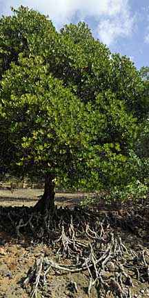
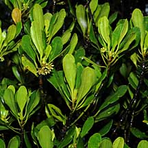
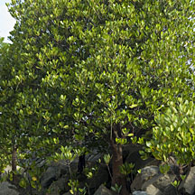
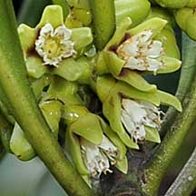
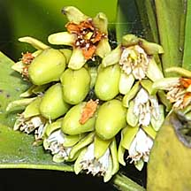
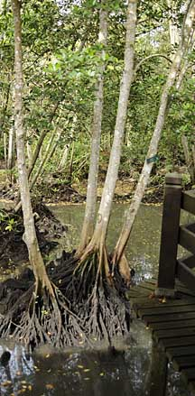
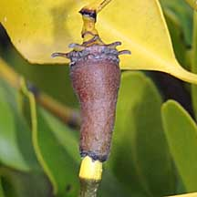
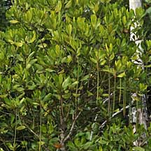
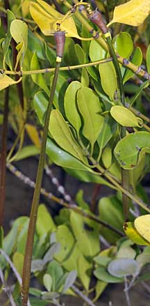

|
|
|
plants text index | photo
index
|
| mangroves | Ceriops in general |
| Tengar
putih Ceriops tagal Family Rhizophoraceae updated Jan 2013 Where seen? This tree with rather plasticky thick rounded-tipped leaves is sometimes seen in our mangroves. It grows on well-drained soil, within the reach of occasional tides in the inner mangrove. In Singapore, this species does not grow very well from its rarity and small size. According to Hsuan Keng, it was found in Jurong and Changi. It was formerly called C. candolleana. Features: Tree grows to about 20m tall, but in Singapore they are much shorter and often just bushes. Sometimes with short buttresses which might have started as short stilt roots at the base of the tree, pneumatophores sometimes seen as looped surface roots. Bark smooth or slightly fissured, pale grey or white often with a red tinge, peeling in thick strips from the buttressed portion. Leaves spatula shaped (7-10cm), thick glossy, arranged opposite one another. Dark green in the shade, greenish yellow in full sun. Leaf stalk usually not pinkish. Stipule flattened knife-like. Flowers, small (0.5cm) several in a dense ball-shaped cluster. Calyx thick with 5-6 lobes. Petals tiny frilly, white that turn orange-brown. According to Tomlinson, the flowers are pollinated by small night-flying moths. Flowers open mainly in the evening with a "faint but fragrant odour" and may remain open the following day. A small quantity of nectar is secreted. and night-flying moths have been observed visiting them. The petals of the flower hold loose pollen and are under tension. When probed at the base, the petal unzips to scatter a cloud of pollen over the head of the moth. Fruit brown and smooth without any texture. Hypocotyl long pointed (15-25cm long) with fluted ridges along the length and a white collar when ready to drop off. Human uses: According to Burkill, it is highly valued as firewood as well as timber and it is "exploited so much that well-grown trees are rare". The bark was one of the chief dyes in Malaya and the batik industry, producing shades of purple, brown and black. It is also used to dye mats. The bark was also used for tanning and toughening fishing lines. It was said the natives of the Andamans sometimes eat the fruit. Medicinal uses include the bark for women in childbirth and as part of a lotion for ulcers. Status and threats: It is listed as 'Vulnerable' on the Red List of threatened plants of Singapore. |
 Pulau Semakau, Jan 09  Pulau Semakau, Dec 08 |
|
 Growing on a sea wall. Pulau Hantu, Apr 09 |
 Pulau Semakau, Jan 09 |
 Flowers small, many one one stalk. Pulau Ubin, Jan 09 |
|
 Stilt roots. Sungei Buloh, Sep 09 |
 Brown 'fruit' smooth. Pulau Semakau, Jan 09  Propagules hang down. Pulau Ubin, Jan 09 |
 White collar on propagule. Pulau Semakau, Jan 09 |
Tengar putih on Singapore shores |
| Photos of Tengar putih for free download from wildsingapore flickr |
| Distribution in Singapore on this wildsingapore flickr map |
|
Links
References
|